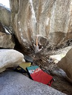
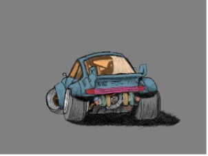
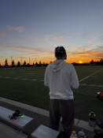

ROCK CLIMBING
This hobby or sport I got into really helped me emotionally; it helped me get in shape, and I met some amazing people. I got pretty good at it. I participated in competitions and got in the top 10.

ART
I’ve always enjoyed art and using my creativity; it is just an expression outlet for me, and I’ve really enjoyed painting and drawing especially digitally.

FPV DRONES
This hobby is the biggest hobby I have ever gotten into. How this hobby works is you have to have hours and hours before you even get into the hobby and are able to fly. It just has a huge learning curve, although it is so much fun when you start figuring it out.